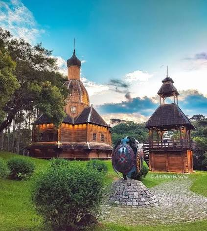
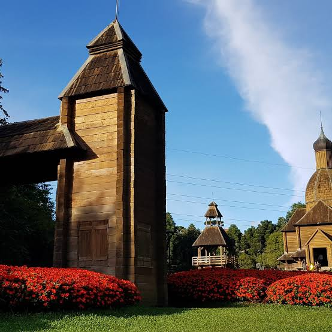

O Memorial Ucraniano, localizado no Parque Tingui em Curitiba, é um importante espaço dedicado a preservar a
memória dos imigrantes ucranianos que ajudaram a construir a história da região. O local serve como um ato
de respeito e tributo aos ucranianos que enfrentaram grandes desafios ao longo de sua trajetória, incluindo
conflitos históricos e o processo de adaptação em novas terras. Ao caminhar pelo espaço, o visitante é
convidado a refletir sobre a importância de honrar aqueles que deixaram suas marcas na identidade cultural
da cidade.

fonte: https://www.instagram.com/p/Cqko_aCubGC/
Arquitetura e Réplica da Igreja de São Miguel
Uma das atrações mais marcantes da estrutura é a réplica em madeira da Igreja de São Miguel da Serra,
originária da Serra do Tigre, no município de Prudentópolis. A construção segue o estilo arquitetônico
tradicional bizantino, feito em troncos de madeira, destacando as cúpulas características das igrejas
ortodoxas e greco-católicas do leste europeu. Essa réplica não apenas embeleza o parque, mas também
proporciona uma imersão na estética das edificações religiosas típicas trazidas pelos pioneiros para o
Brasil.

Preservação Cultural e Tradições Vivas
Além do valor histórico, o memorial atua como um polo dinâmico para a manutenção e celebração das tradições
culturais da Ucrânia. No espaço expositivo, é possível encontrar amostras do artesanato tradicional, com
destaque para as pêssankas — ovos pintados à mão com ricos detalhes simbólicos —, vestidos folclóricos e
ícones religiosos. O local sedia eventos culturais ao longo do ano, mantendo vivas a música, a dança e os
costumes da comunidade entre as novas gerações.